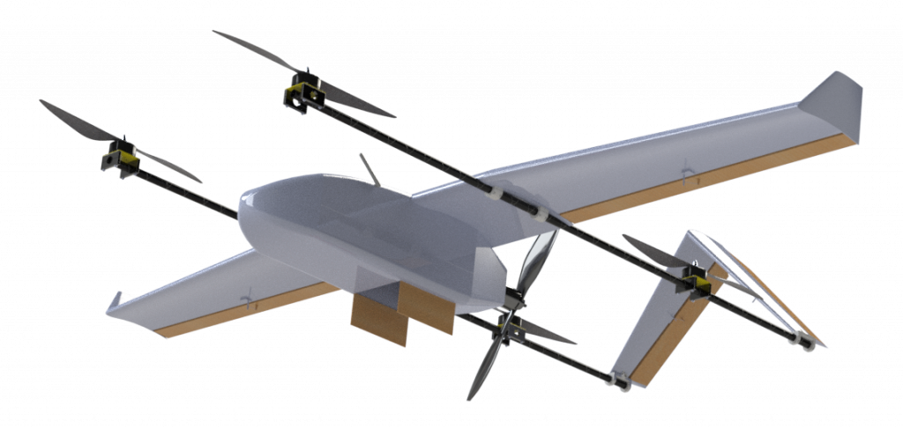

RUPESH BADE SHRESTHA
Professional Experience
1)Prokura Innovations Pvt. Ltd.
Prokura Innovations is a company of mechanical, electronics and electrical engineers having experience and expertise in the field of product design. I joined Prokura Innovations from January 5, 2020 as a Product Development Engineer in order to widen my knowledge in product development and do novel work by developing a Medical Delivery Drone, funded by UNICEF Nepal. Yes, Prokura Innovation is funded by UNICEF Innovation Fund in order to develop a drone that could deliver emergency medicines or blood packs to health posts of rural areas of Nepal, where there is good roads to deliver medicines on time. This project aims to save lives of people from rural parts. Some of my works in this project are given below:

2)Paramount Construction Pvt. Ltd.(Internship)
In my 6 month internship from Paramount Construction Pvt. Ltd., I learned structural designs, development of formal drawings, procurement and also project management.